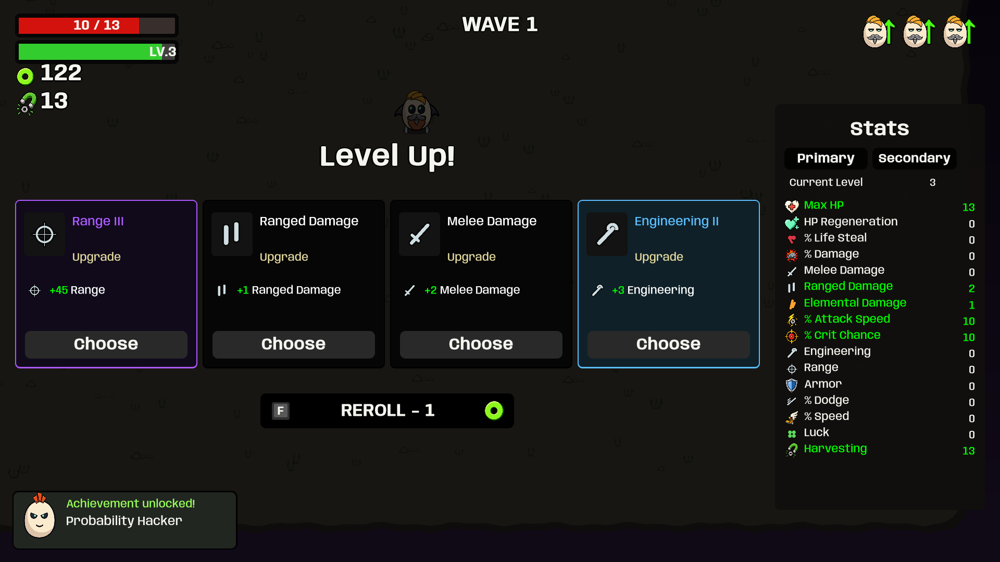
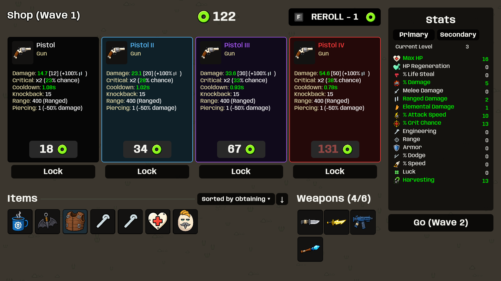
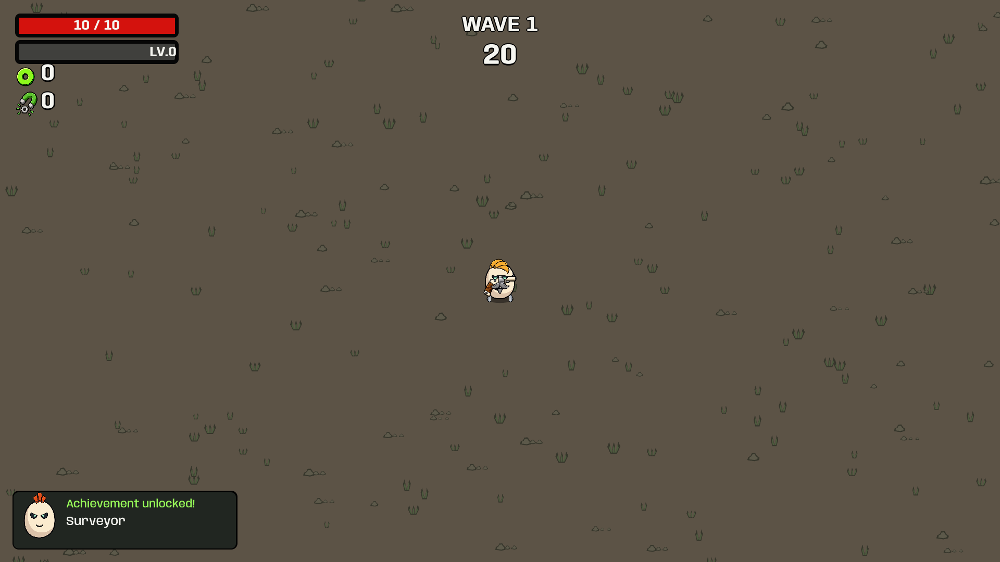
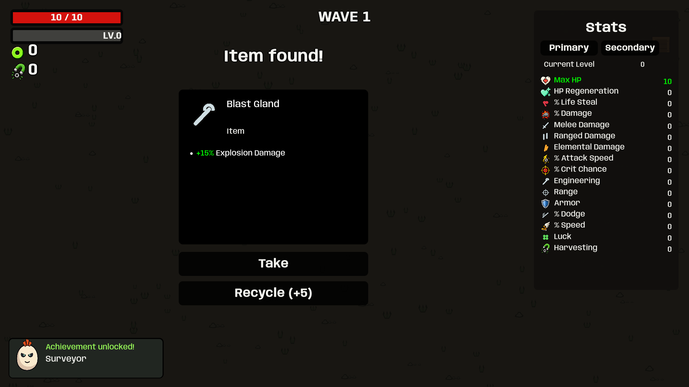
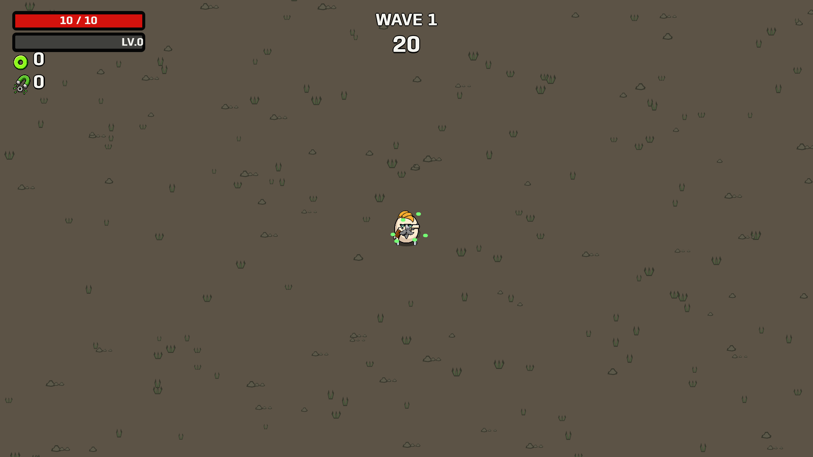
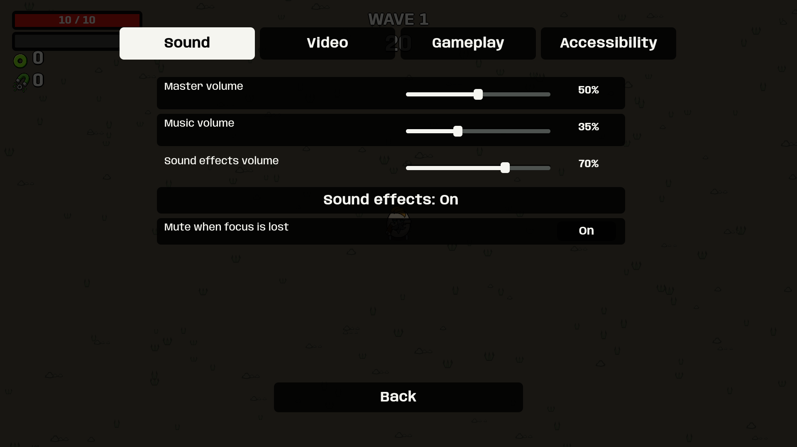

Runtime captures: Passed (65 cases). These are staged renders from the executable; they do not certify native input or subjective sound quality.
Reference: Brotato upgrade screen · Brotato shop. Button actions use gray idle surfaces and white hover. Our character and item art remain.
126 BPM, E minor, 32-bar electronic loop. Music continues quietly through menus and pause. Adjust Music volume in Options → Sound.





